Broadcast, sound and portrait pass
14 October 2026 · Matt against Zombie at 1080 x 1920 with the interface laid over the picture · yellow pins mark what is new, red pins what went
Of the 30 options proposed today, 26 were taken (all but features 1, 5, 8 and 9). All 44 play-mode tests in PoBox.Tests pass, including the new ones. The one-screen audit reports nothing off screen, scrolling, too small, clipped, overlapping or with a touch target under 88 px, at 720 x 1280, 1080 x 1920, 1080 x 2400 and 1080 x 2520, with and without a notch. During the play session the console showed no errors.
| Group | Done | Seen working here |
|---|---|---|
| Features | 2 fatigue bar and lines · 3 cutting before the punch lands · 4 ON THE ROPES, centre control, ring generalship · 6 haptics · 7 spoken commentary · 10 ring-navigation reward (staged, not trained) | 4 (round-break card). 2 shows only for boxers with fatigue on (Trump today). 6 and 7 work only on a phone: not tried yet. |
| Graphics and audio | 1 block pop and puff · 2 damage ghost bar · 3 the dazed sound and look · 4 rope creak and twang · 5 sound follows the camera · 6 shockwave ring · 7 knockdown spotlight · 8 X-ray · 9 muscle and fatigue tint · 10 corner props and a governor driven by the phone's temperature | 2, 6, 7, 8, 9 and the props. The sounds have not been listened to. |
| UI | All ten, plus the audit's smaller defects | See below |
The first screen: five anchors, room for the faces
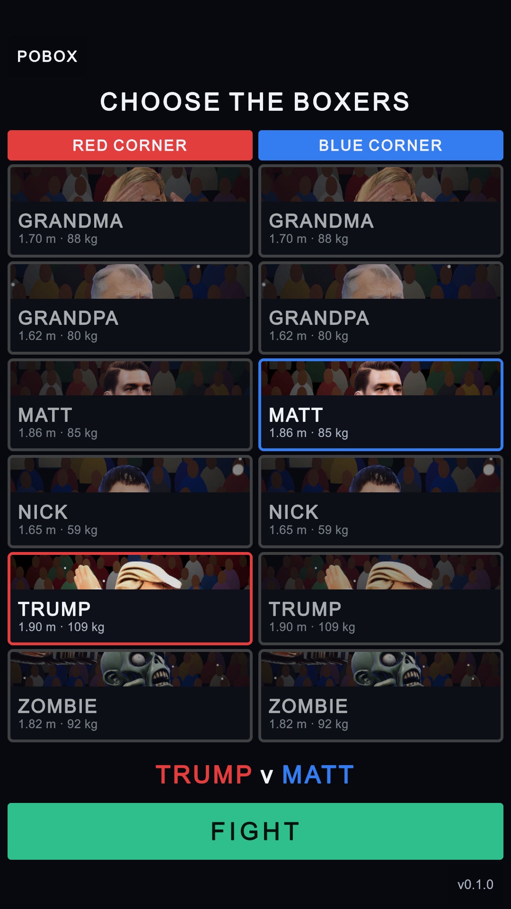
abc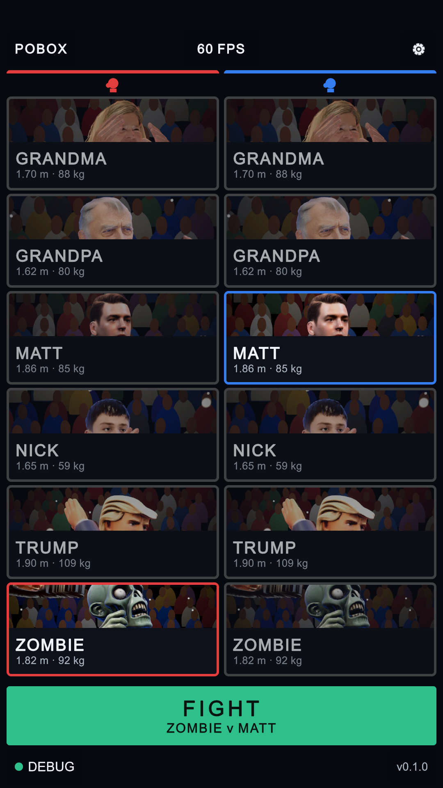
12345- FPS chip at top centre.
- A settings button at top right opens the same Settings page as in the fight.
- A coloured border and a glove for each corner (a, b: the heading and the RED/BLUE CORNER labels are gone). The portraits get the space.
- The pairing is on the FIGHT button (c). FIGHT now loads the arena in the background, dims with dots, and locks the cards.
- DEBUG chip at bottom left: all five anchors on the first screen.
The menu sheet, the ghost bar, the new turnbuckles
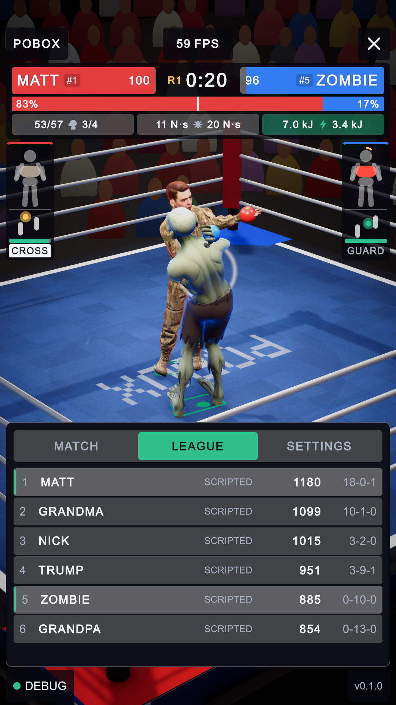
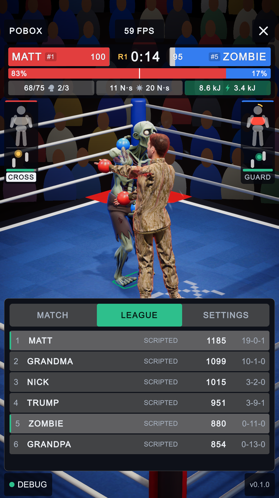
123- Damage ghost bar: the health just lost stays pale for about 0.6 s, then drains. Numbers and badges pop as they change.
- The tabs are the full 88 px tall.
- Turnbuckle pads modelled in Blender (red, blue, white) in place of the grey cubes. Stools and buckets come out only at the round break. A bell hangs on the apron.
Settings: icons, voice and buzz
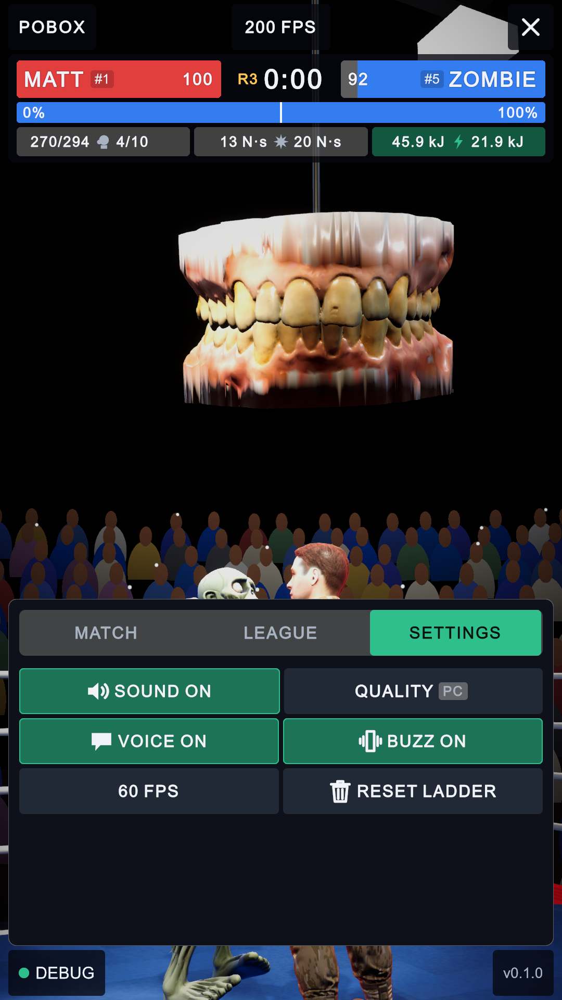
12345- A speaker icon on SOUND.
- Quality is shown as a badge.
- VOICE: the commentary read aloud by the phone's own voice (offline).
- BUZZ: the phone vibrates with each punch, knockdown and fall, scaled to how hard they are.
- RESET LADDER has a bin icon and asks SURE? before it acts.
Debug panel: blocks taps, hides the caption, has an X-ray chip
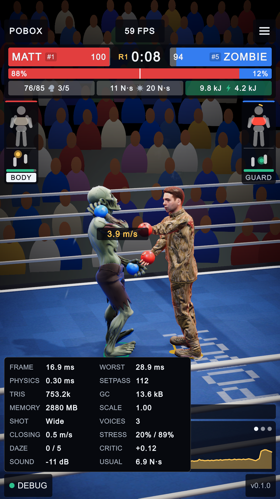
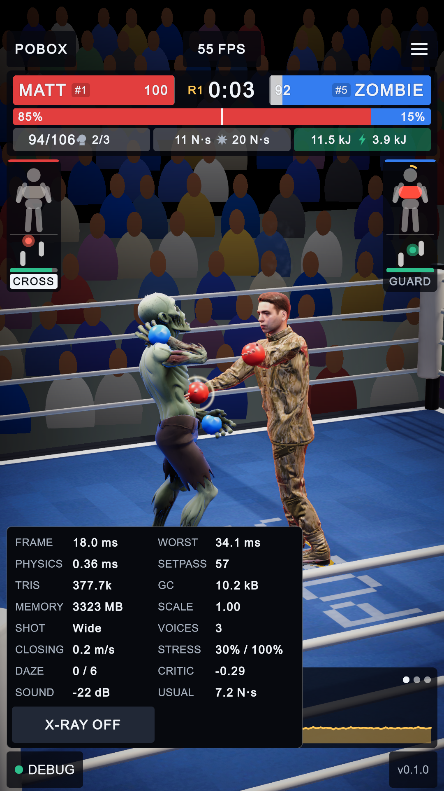
123- The X-RAY chip.
- The commentary caption no longer shows through beside the panel. Taps on the panel no longer fall through to the picture, and a tap outside it closes it.
- The shockwave ring on a hard punch, at the glove (only for hits over 1.25 times the usual impulse).
X-ray: collision shapes, muscle load, contact
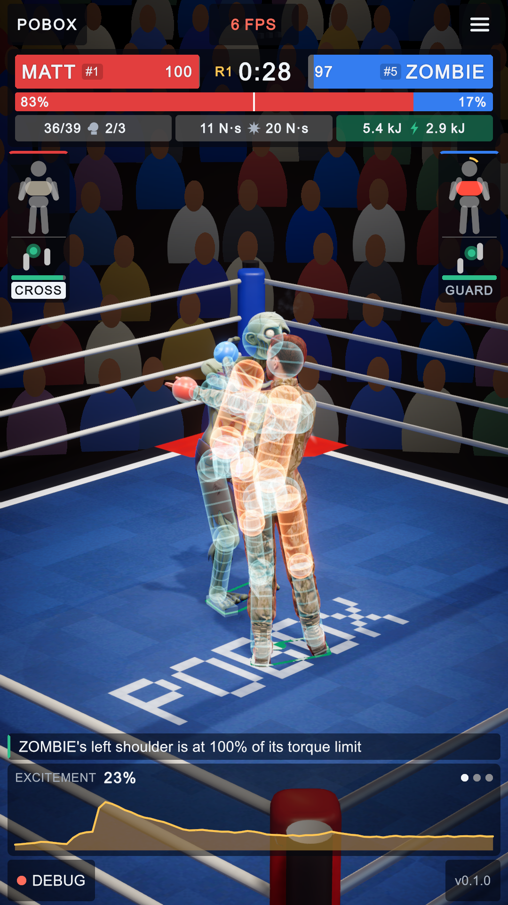
12- Each boxer's MuJoCo collision shapes (capsules, boxes, spheres), drawn from the physics itself. Cyan is fresh; it turns violet as the boxer tires.
- Amber where the joints work near their torque or speed limit. Red-white where a shape is pressed in contact.
Cost with it on: 16.4 ms a frame, the same as with it off. The frame-rate chip read 6 FPS in this picture because the screenshot stalled that frame.
A knockdown: spotlight on the count
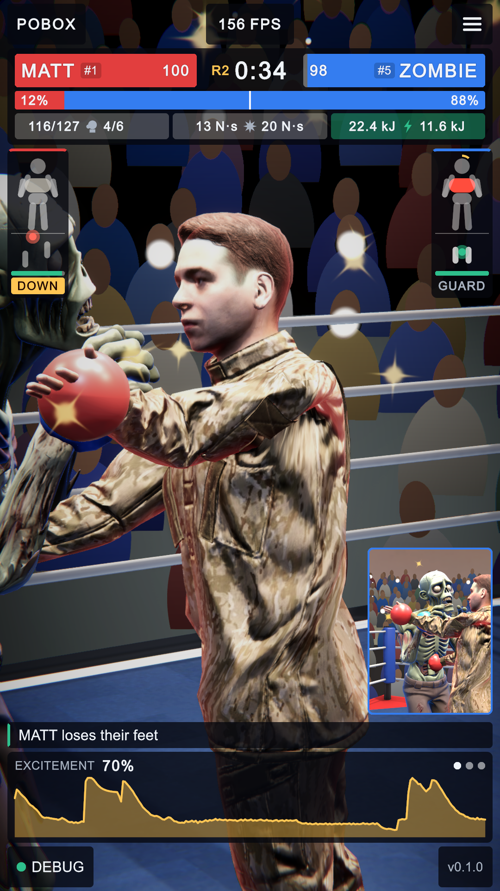
12- DOWN, during the count.
- The inset, as before.
The camera is close here, so the spotlight is out of shot. Measured during this count, the spot was on, 6.4 m straight above the downed boxer and fading in (intensity 141 of 200). The house lights drop to 30% and the picture loses some colour. It all comes back on the get-up.
Round break: centre control
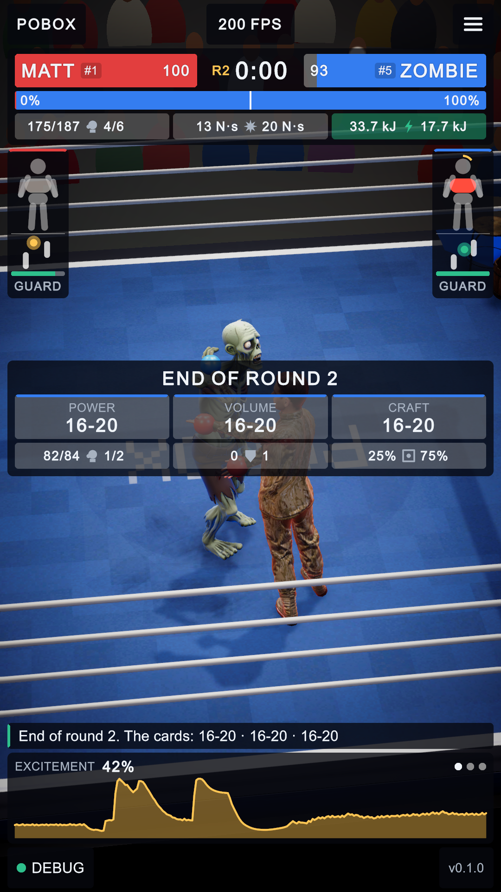
1- How much of the round each boxer held the centre (ring icon). When all three judges score a round level, it goes to whoever held the centre at least 60% of the time. It never outweighs punches.
Results: icons for the key
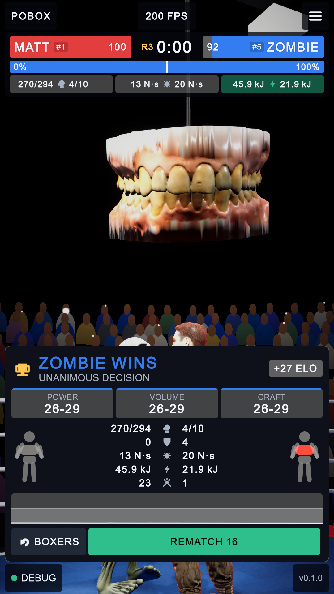
1- The words LANDED, BLOCKED, PEAK, ENERGY and DAMAGE are gone. The icons alone carry the key, as on the scoreboard, and the column is about 60 px wide instead of 220.
Testbed: the same five anchors
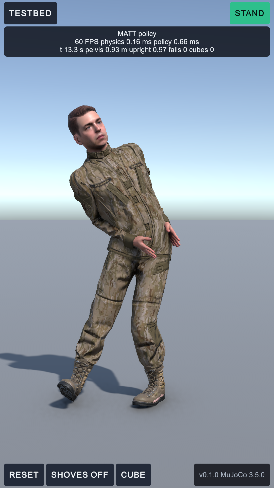
ab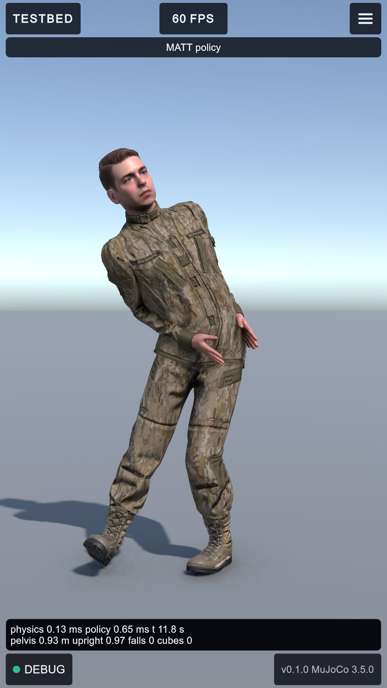
1234- FPS at top centre.
- STAND, RESET, SHOVES and CUBE (a, b) moved under the menu at top right.
- DEBUG at bottom left. The testbed also respects the notch now.
- The readout sits on its own line above the bottom anchors.
The red and blue gloves are off
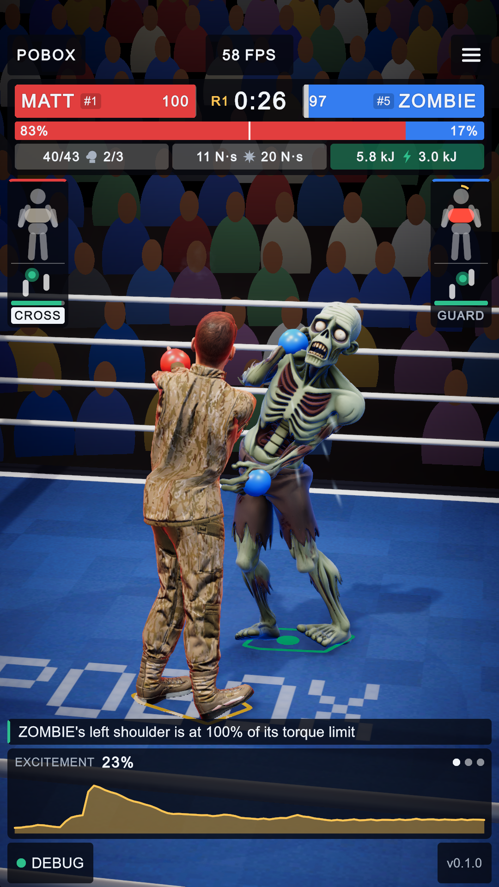
a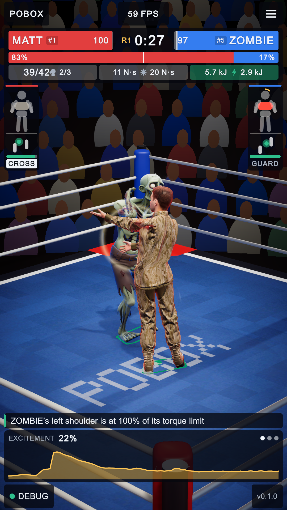
1- The boxers fight with their own hands (a: the corner-coloured spheres are gone, on all six boxers in both corners). The spheres are still there for MuJoCo, which measures punches with them, but they are no longer drawn. The punch trails keep the corner colours.